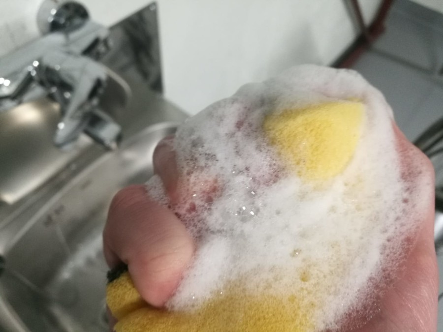
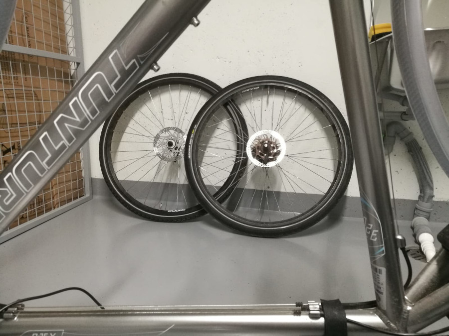
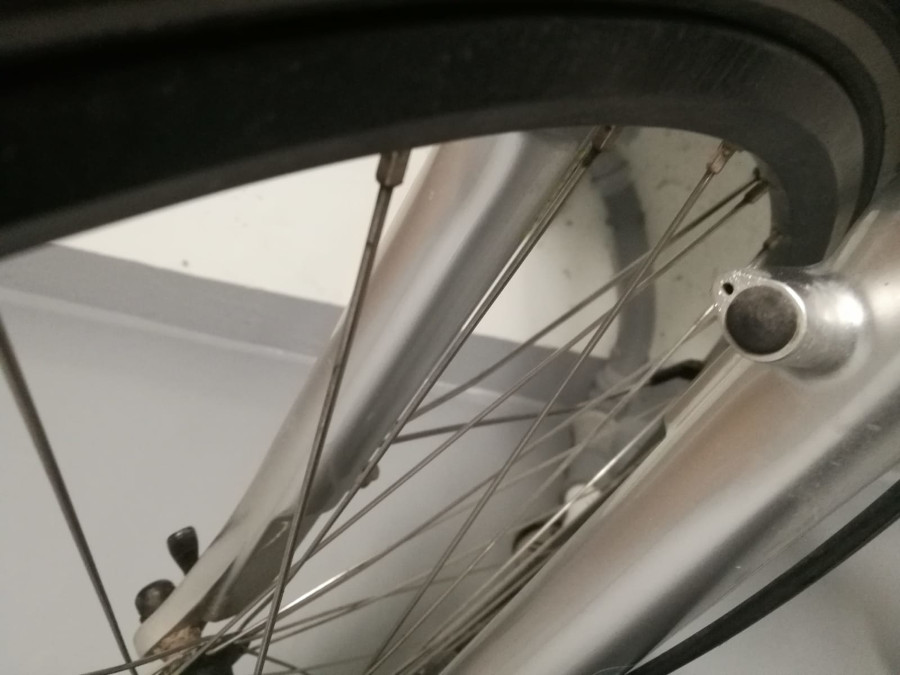
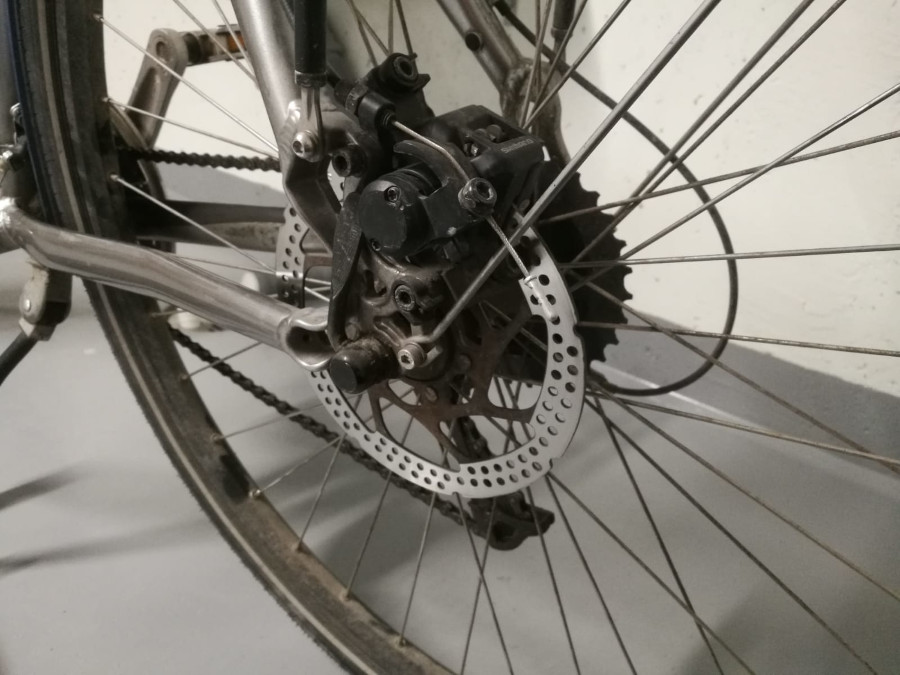
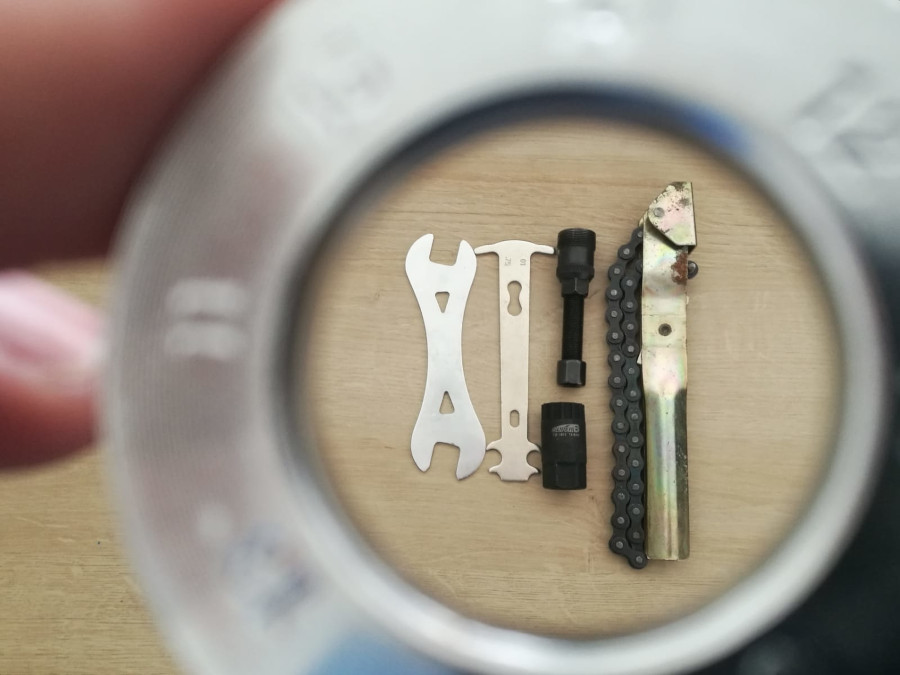

Nettisivumme tarkoituksena on tarjota hyvä ohjepankki pyörän keväthuoltoon sekä karttapalvelu lähimmän
vuokrapyörän löytämiseksi. Sivustollamme navigoidaan vasemmalla olevan valikon avulla. Mukavia
pyöränhuoltohetkiä!
1. Pyörän pesu

Pyyhkäise aluksi isoimmat roskat pyörän rungosta liinalla tai paperilla. Puhdista sitten runko joka paikasta
miedolla saippuavedellä. Jos tässä vaiheessa huomaat jotakin olevan
pyörässä rikki, ei rikkinäistä
osaa kannata turhaan pestä. Rungon lisäksi myös vanteet on hyvä pyyhkiä saippuavedellä.
Kun pyörä on pääasiallisesti puhdistettu saippuavedellä, on edessä työläin mutta
tärkein osuus:
voimansiirron puhdistaminen, jossa rattaat puhdistetaan ketjujen lisäksi sopivalla liuottimella. Ketjut voi
puhdistaa ketjupesurilla
tai esimerkiksi laittamalla ne rasiaan liuottimen kanssa ja ravistamalla huolellisesti. Tämä operaatio kannattaa
toistaa
muutaman kerran. Puhtaiden ketjujen
on hyvä antaa kuivua, jotta liuottimet haihtuvat pois ennen kuin niveliin laitetaan uusi öljy. Ylimääräinen
öljy pyyhitään rätillä pois.
2. Renkaat

Renkaita huoltaessa ensimmäisenä kannattaa tarkistaa se, että renkaiden kuviointi ei ole kulunut pois, eli toisin
sanoen, ovatko renkaat
vielä ajokunnossa vai eivät. Jos renkaat ovat käyttökelpoiset eikä niissä ole reikiä, täytetään ne ilmalla.
Talvirenkaat
vaihdetaan tietysti kesärenkaisiin, jos sellaiset on alla.
3. Vanteet ja pinnat

Tarkista, että vanteet eivät ole kovin käyrät tai kolhuilla. Varsinkin palajarrujen kanssa on tärkeää, että vanne
ei vietä liikaa oikealle tai vasemmalle. Katso myös, että pinnat ovat tarpeeksi kireällä ja että kaikki pinnat
ovat ehjiä.
Pinnat soivat suunnilleen samalla taajuudella niitä napauttaessa ideaalitilanteessa. Jos pinnojen kanssa on
ongelmia,
eikä pyöränhuollosta ole suurempaa kokemusta, kannattaa suosiolla kilauttaa kaverille tai huoltoliikkeeseen.
Pinnojen
kiristys on haastava toimenpide.
4. Jarrut

Tarkista, että jarrulevyt tai -palat eivät ole liian kuluneet. Kuluneet jarrut tunnistat siitä, että
kulutuspintaa ei ole enää jäljellä. Kuluneet osat vaihdetaan uusiin. Tarkista myös,
että
jarrut ovat tarpeeksi kireällä, eivätkä jarruvaijerit ole rispaantuneet. Jos jarruvaijerissa on yksikin säie
poikki,
se
kannattaa suosiolla vaihtaa ehjään.
5. Varusteet

Varmista että pyörästä löytyy tieliikennelain velvoittamat heijastimet ja valaisimet. Mukana kannattaa pyöräillessä olla myös
esimerkiksi uusi sisäkumi rengasrikon varalta, ja työkalut sen vaihtamiseen. Mukavia pyöräilyhetkiä!
1. Pyörän pesu
2. Renkaat
3. Vanteet ja pinnat
4. Jarrut
5. Varusteet
Pääkaupunkiseudun kaupunkipyöräasemat
HSL-kaupunkipyörien käyttöoikeus täytyy ostaa
HSL:n sivuilta ennen käytön aloittamista.